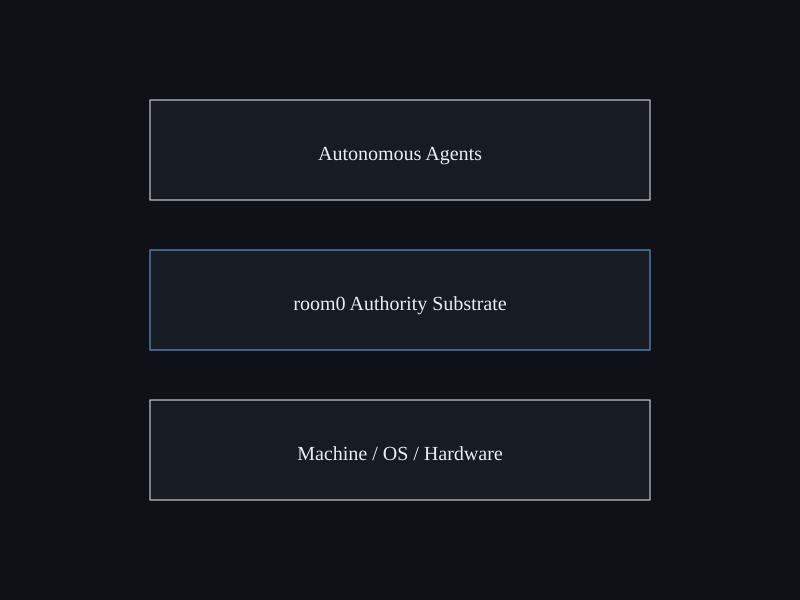

Platform overview · Draft
room0
room0 is the authority substrate: a governance kernel for tool-using agents. It exists to define boundaries, enforce policy, and leave receipts — so always-on assistants can be run with less risk.
Define the rules. Enforce the boundary. Fail closed by default.
Core components (draft)
The boring parts that make everything else possible:
- Policy engine: ask / allow / block, contextual rules, per-agent scopes
- Tool gateway: proxy tools, scope tokens, throttle usage, enforce policy
- Receipts: structured logs of actions and data access; searchable history
- Contracts: versioned interfaces so agents integrate without chaos
Governance direction (draft)
A shared model for how power is granted:
- RFCs for new tools, permissions, and high-risk capabilities
- Reviewable defaults that assume least privilege
- Clear connector boundaries (read vs write; draft vs send)
This is intent, not a claim about what already exists.

Brand guide
Want to contribute UI/docs? The current brand guide is included in this repo: Room0_Brand_Guide.pdf